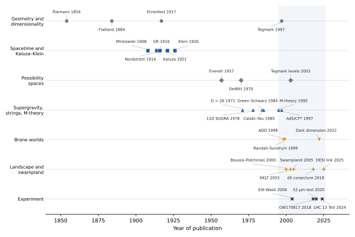
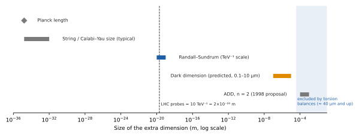

Abstract—Popular accounts describe a ladder of dimensions running from a point (0D) to an all-encompassing eighth dimension, in which the fifth holds all your possible lives and the seventh all possible universes. This paper sets that picture against the research literature. It reviews, in chronological order, the key papers on higher dimensions from Riemann’s 1854 lecture to the swampland and “dark dimension” programmes of 2022–2025. For each it states the central argument, the assumptions on which it rests and the contradictions it has met. Three distinct meanings of “dimension” are separated throughout: spacetime dimensions, compact or warped extra spatial dimensions, and abstract possibility spaces such as quantum branches and the string landscape. The review covers Ehrenfest’s stability argument for three dimensions, Minkowski spacetime, Kaluza–Klein unification, Everett’s relative-state formulation, supergravity in eleven dimensions, superstrings in ten, M-theory, D-branes and holography, the large (ADD) and warped (Randall–Sundrum) extra dimensions of 1998–1999, the string landscape and multiverse, the swampland de Sitter conjecture, the micron-scale dark dimension and its proposed link to the weakening dark energy reported by DESI, emergent-dimension results from quantum gravity, and synthetic dimensions in the laboratory. Three independent experiments agree that no extra dimension has been seen: gravity obeys the inverse-square law down to separations of 52 µm, the LHC excludes a fundamental gravity scale below 5–11 TeV, and gravitational waves from GW170817 travelled through D = 4.02 (+0.07/−0.10) spacetime dimensions. Two tables summarise the recurring assumptions and contradictions and map the popular ladder onto the literature. Only the rungs up to four dimensions are established physics; extra spatial dimensions remain well motivated but untested at the relevant scales, and the “higher dimensions” of popular accounts are mostly possibility spaces that the source papers never call dimensions.
Index Terms—Extra dimensions, Kaluza–Klein theory, string theory, M-theory, brane world, large extra dimensions, Randall–Sundrum model, many-worlds interpretation, string landscape, swampland, dark dimension, inverse-square law, gravitational waves, holography.
The question “how many dimensions does the world have?” sounds like it has one answer. In practice it has had several, each tied to a different meaning of the word. To a geometer a dimension is an independent coordinate. To a relativist time is one of four coordinates of spacetime, but a different kind of coordinate from the other three. To a string theorist there are ten or eleven, six or seven of them curled up too small to see. And to a popular writer the fifth dimension may hold every way your life could have gone.
This review was prompted by a widely viewed popular video that walks the viewer from zero to eight dimensions [1]. Its first steps follow sound geometry and relativity. Its later steps, a fifth dimension of alternative life histories, a sixth of universes with different physical constants and a seventh containing everything possible, borrow ideas from quantum mechanics and cosmology but present them as further rungs on the same geometric ladder. The aim of this paper is to set that picture against the research literature: what the key papers actually argued, in the order they argued it, what each assumed, and where the arguments contradict each other or the evidence.
Three meanings of “dimension” are kept apart throughout:
Fig. 1 places the main papers on a single time line, grouped into seven strands. Section II covers the geometric foundations and the first physical argument for three dimensions. Section III covers four-dimensional spacetime and Section IV the Kaluza–Klein programme. Section V treats Everett’s branches, the origin of the popular fifth dimension. Sections VI and VII trace supergravity, string theory and M-theory, and Section VIII the testable brane-world models of 1998–1999. Section IX reviews the landscape and multiverse, and Section X the current theories of 2018–2026. Section XI gives the experimental status, Section XII the cross-cutting assumptions and contradictions, Section XIII maps the popular ladder onto the literature and Section XIV concludes.

The idea that space might have more than three dimensions began as mathematics. In his 1854 habilitation lecture, published in 1868, Riemann defined a manifold of n dimensions with a metric that may vary from point to point [2]. His key argument was that the geometry of physical space is an empirical question, not something logic can settle; which geometry holds must be decided by measurement. His work assumed that space is a smooth manifold at every scale, but Riemann himself noted that the assumption might fail at very small distances, anticipating by a century and a half the modern question of what happens at the Planck length.
Hinton’s essay “What is the fourth dimension?” (1880) [3] and Abbott’s novella Flatland (1884) [4] introduced the method used by every later popular explanation, including the video discussed here: reason by analogy from a lower-dimensional observer. A two-dimensional being sees a sphere passing through its plane only as a point that grows into a circle, shrinks and vanishes; we would likewise see a four-dimensional object only as a sequence of three-dimensional slices. The analogy assumes the extra direction is a fourth spatial direction exactly like the other three. It fails, as later sections show, once the extra dimension is time (Section III) or a tiny compact circle (Section IV).
The first physical argument for why space has three dimensions came from Ehrenfest in 1917 [5]. In n spatial dimensions, the field of a point source spreads over a sphere whose area grows as rn−1, so gravitational and electrostatic forces fall off as
F(r) ∝ 1 / rn−1 (1)
For n ≥ 4 the force falls off so steeply that stable planetary orbits do not exist, and the corresponding quantum problem has no stable atomic ground state. Ehrenfest concluded that three is singled out. The argument assumes that the laws of physics keep the same form, Poisson’s equation for the potential, in any number of dimensions. Its lasting influence is twofold. It is the root of the modern rule that any extra dimensions must be hidden, because large flat ones would destabilise ordinary matter. And Eq. (1) is the basis of today’s most direct test: if gravity spreads into extra dimensions at short range, the inverse-square law must change there (Section XI).
The first extra dimension physics accepted was time, and it differs in kind from the three spatial ones. In his 1908 lecture “Raum und Zeit” [6], Minkowski showed that special relativity is the geometry of a four-dimensional spacetime with the invariant interval
ds2 = −c2dt2 + dx2 + dy2 + dz2 (2)
His central claim was that space by itself and time by itself are observer-dependent, and only their union has an invariant geometry. The opposite sign of the time term is essential: it is what makes time a direction one cannot turn around in, and it is why the Flatland analogy, which treats every new dimension as one more spatial axis, does not apply to time. Einstein’s general relativity (1915–1916) then made gravity the curvature of this four-dimensional spacetime [7].
The block universe reading takes Eq. (2) literally: the whole history of an object is a four-dimensional “world-tube”, which is the video’s picture of a star’s life as one twisting shape. The reading follows naturally from the relativity of simultaneity, but it sits uneasily with our experience of a moving present and with quantum measurement, which appears to select one outcome at a definite time. Whether time “flows” or is simply a coordinate remains a philosophical dispute that relativity does not decide.
Extra time dimensions have been explored, notably in Bars’s two-time physics [8]. Tegmark argues that with more than one time dimension the equations of physics lose the hyperbolic character that allows an observer to predict the future from present data [9]. That is one reason almost all serious models add only spatial dimensions.
Kaluza–Klein theory introduced the idea that drives nearly all later work on extra dimensions: one extra spatial dimension, curled into a tiny circle, can produce electromagnetism from pure geometry. Nordström had already built a five-dimensional unification of electromagnetism with his own scalar theory of gravity in 1914 [10], but it was abandoned when general relativity replaced that theory of gravity.
In 1921 Kaluza wrote general relativity in five dimensions [11]. The 5D metric splits into a 4D metric gμν, a 4D vector Aμ and a scalar φ:
ds25 = gμνdxμdxν + φ2(dy + κAμdxμ)2 (3)
Einstein’s equations in five dimensions then reproduce Einstein’s equations and Maxwell’s equations in four. Kaluza had to assume that nothing depends on the fifth coordinate y, the “cylinder condition”, and he imposed it without a physical reason.
Klein supplied the reason in 1926 [12], [13]. If the fifth dimension is a circle of radius R, quantum mechanics requires the momentum around it to come in steps of ℏ/R. Electric charge is then quantised automatically, and every 4D field acquires an infinite “Kaluza–Klein tower” of heavier copies with masses
mn = nℏ / (Rc), n = 0, 1, 2, … (4)
Only the n = 0 modes are light, which is why a small enough circle is invisible: Klein’s R was close to the Planck length, about 10−35 m, putting the first excited mode near 1019 GeV. Eq. (4) is the basis of every later search for extra dimensions at colliders.
Three problems stalled Kaluza–Klein theory. First, the scalar φ in Eq. (3), later called the radion or dilaton, has no stabilising mechanism: nothing fixes R, and a massless scalar would mediate a fifth force that has not been seen. This “moduli problem” is still open in string theory. Second, attempts to treat the electron as a Kaluza–Klein mode gave a mass near the Planck mass, about 1022 times too large. Third, the theory covers only electromagnetism; the strong and weak forces need more extra dimensions with more complicated shapes. Einstein worked on five-dimensional versions with Bergmann and others into the 1940s [14], but the approach faded until supergravity revived it.
The popular “fifth dimension of all your possible lives” comes from quantum mechanics, not from geometry. In 1957 Everett proposed dropping wavefunction collapse altogether [15]. The universal wavefunction always evolves smoothly under the Schrödinger equation, and a measurement simply correlates observer and system into branches, each with a definite outcome. The proposal assumes that the wavefunction is real and complete and that unitary evolution is never violated. DeWitt popularised it in 1970 as the “many-worlds” interpretation, with the image of a universe constantly splitting [16].
The collection of branches lives in Hilbert space, the state space of quantum mechanics, which has an enormous and often infinite number of dimensions. It is not a fifth axis alongside x, y, z and t; the video’s fifth dimension compresses it into one axis for the sake of a picture. The interpretation faces three open problems:
In string theory and supergravity the number of dimensions stopped being a free choice and became a consistency condition. Lovelace found in 1971 that the dual-resonance (bosonic string) model is consistent only in D = 26 dimensions [21]; in any other dimension the quantum theory breaks Lorentz symmetry or contains negative-probability states. The bosonic string also contains a tachyon, a sign of an unstable vacuum. Adding supersymmetry lowers the critical dimension to D = 10 and, with the projection introduced by Gliozzi, Scherk and Olive, removes the tachyon [22].
Supergravity gave an upper limit. Nahm showed in 1978 that eleven is the largest number of dimensions in which a supersymmetric theory can avoid particles of spin higher than two [23], and Cremmer, Julia and Scherk constructed the unique supergravity theory in eleven dimensions in the same year [24].
In 1981 Witten observed that the seven extra dimensions of eleven-dimensional supergravity are just enough to contain the Standard Model gauge group SU(3) × SU(2) × U(1) as geometric symmetries [25]. In the same paper he showed the contradiction that ended this hope: a plain Kaluza–Klein reduction on a smooth manifold cannot produce chiral fermions, in which left- and right-handed particles behave differently, and the weak force requires them. That result pushed attention to strings.
Green and Schwarz showed in 1984 that type I superstrings with gauge group SO(32) are free of quantum anomalies, so a consistent ten-dimensional theory with chiral matter exists [26]. The heterotic string followed [27]. In 1985 Candelas, Horowitz, Strominger and Witten proposed curling the six extra dimensions into a Calabi–Yau manifold [28]. This keeps some supersymmetry in four dimensions and gives chiral fermions, and the topology of the manifold sets the number of particle generations. The proposal assumes Planck-sized extra dimensions and supersymmetry surviving to low energies. Its contradiction was apparent at once: there are at least tens of thousands of Calabi–Yau shapes and nothing in the theory selects one. That is the seed of the later landscape problem (Section IX).
Between 1995 and 1997 the five ten-dimensional string theories turned out to be limits of a single eleven-dimensional theory. Witten showed that when the type IIA string coupling gs is strong, an eleventh dimension opens up with radius R11 = gsℓs, where ℓs is the string length [29]. A web of dualities links all five theories to eleven-dimensional supergravity at low energy, and the whole structure was named M-theory. The argument assumes that duality relations checkable only in supersymmetric and weakly coupled corners hold in the full theory. Thirty years later M-theory still has no complete non-perturbative definition; its eleven-dimensional form is known only through its limits.
Polchinski showed in 1995 that D-branes, the surfaces on which open strings end, are real dynamical objects carrying Ramond–Ramond charge [30]. Gauge fields and matter can be stuck on a brane while gravity spreads through all the dimensions. Hořava and Witten then showed that the strongly coupled heterotic string is M-theory on an interval with a ten-dimensional wall at each end [31]. This was the first model with a largish extra dimension, and it led directly to the brane worlds of Section VIII.
’t Hooft [32] and Susskind [33] argued that the information in a region of quantum gravity is bounded by its surface area, not its volume, so a theory with gravity in D dimensions might be fully described by one without gravity in D−1. Maldacena made this precise in 1997 [34]: string theory on five-dimensional anti-de Sitter space times a five-sphere is exactly equivalent to a four-dimensional quantum field theory living on its boundary. The consequence for the present topic is radical. One spatial dimension can emerge from the energy scale of a lower-dimensional theory, so the number of dimensions may not be fundamental. The duality is precise only for anti-de Sitter space, with negative vacuum energy; our universe has positive vacuum energy, and no equally precise holographic description of it exists.
In 1998–1999 extra dimensions went from a Planck-scale abstraction to something a laboratory or a collider could find. The motivation was the hierarchy problem: the Planck mass that sets the strength of gravity, about 1.2 × 1019 GeV, is some 1016 times the electroweak scale, and no one knows why.
Arkani-Hamed, Dimopoulos and Dvali proposed that gravity is weak at distances above about a millimetre because it leaks into n ≥ 2 new compact dimensions [35]. If the true (4 + n)-dimensional gravity scale MD is near 1 TeV, the observed Planck mass follows from the volume of the extra dimensions:
MPl2 ∼ MDn+2 Rn (5)
All Standard Model particles are assumed to be confined to a three-dimensional brane, and only gravitons move in the extra dimensions. For n = 2 the model predicted that Newtonian gravity changes from 1/r2 to 1/r4 below about a millimetre, in line with Eq. (1); for any n, colliders would see missing energy from gravitons escaping into the bulk. Antoniadis and the same authors embedded the idea in type I string theory with a low string scale [36]. The contradiction is that ADD trades one unexplained large number for another, the ratio of R to the fundamental length. Supernova and neutron-star cooling arguments also ruled out n = 2 with a TeV-scale MD [37].
Randall and Sundrum proposed instead one extra dimension that is strongly curved: a slice of five-dimensional anti-de Sitter space between two three-branes [38]. The metric
ds2 = e−2krc|φ| ημνdxμdxν + rc2dφ2, −π ≤ φ ≤ π (6)
carries an exponential “warp factor”, so masses on the Standard Model brane at φ = π are suppressed by e−kπrc. A modest krc ≈ 12 turns the Planck scale into the TeV scale. The model assumes the radius is stabilised, which Goldberger and Wise showed can be done with a bulk scalar field [39]. It predicts Kaluza–Klein gravitons with TeV-scale masses decaying to pairs of leptons or photons. In a second paper Randall and Sundrum showed that the extra dimension can even be infinite and still give ordinary four-dimensional gravity at long distances, because the warping localises the graviton near the brane [40]. That undercut Ehrenfest’s old rule that extra dimensions must be small.
Once string theory had many ways to curl up its extra dimensions, the question “why do we see 3+1?” became one of selection among many possible universes. This is the literature behind the video’s sixth and seventh dimensions. Tegmark argued in 1997 that string theories with several low-energy limits predict an ensemble of spacetimes of different dimensionality, and that all but 3+1 may be “dead worlds” without observers [9]. More than one time dimension destroys predictability; more than three space dimensions make atoms and orbits unstable, following Ehrenfest; fewer than three allow no gravitational attraction and too little complexity. The argument is anthropic and assumes that observers need stability, complexity and predictability and that the laws keep their form in other dimensions.
Bousso and Polchinski showed in 2000 that quantised fluxes threading the extra dimensions give an enormous “discretuum” of vacua, some with a vacuum energy as small as the one observed [41]. Kachru, Kallosh, Linde and Trivedi (KKLT) then fixed all moduli, including the size of the extra dimensions, with fluxes and non-perturbative effects, and lifted the vacuum energy to a positive value with anti-D3-branes [42]. This was the first claimed construction of a universe like ours, with positive vacuum energy (de Sitter space), in string theory. Susskind named the resulting space of vacua the landscape, often quoted as about 10500 vacua, and combined with eternal inflation they become physically realised “pocket universes” with different constants and even different dimensions [43].
Tegmark organised these ideas into a four-level multiverse [44]: Level I, regions beyond our cosmic horizon; Level II, inflationary bubbles with different constants and dimensionality; Level III, Everett branches; and Level IV, all mathematical structures. Levels II and IV correspond closely to the video’s sixth and seventh dimensions.
Vafa separated effective field theories into the landscape, which can come from string theory, and the swampland, which looks consistent at low energy but cannot be completed into quantum gravity [48]. The distance conjecture of Ooguri and Vafa states that when a scalar field moves a long distance in field space, an infinite tower of states, often the Kaluza–Klein tower of an expanding extra dimension, becomes exponentially light [49].
Obied, Ooguri, Spodyneiko and Vafa began from the observation that it has proved notoriously difficult to construct a metastable de Sitter vacuum in string theory under controlled approximation, and proposed that such vacua lie in the swampland [50]. A refined version followed [51]. If correct, dark energy cannot be a true cosmological constant and must be evolving. This directly challenges KKLT and the landscape. Akrami, Kallosh, Linde and Vardanyan defended KKLT and argued that the conjecture also conflicts with the Higgs potential and simple inflation models [52]. As of 2026 the dispute is unresolved, with constructions and counter-examples on both sides.
Montero, Vafa and Valenzuela applied the distance conjecture to the tiny observed dark-energy density Λ [53]. Combined with experimental bounds, it singles out exactly one extra dimension of size
R ∼ λ Λ−1/4 ≈ 0.1–10 µm (7)
where λ is a constant of order 10−1 to 10−3. The five-dimensional Planck scale would then be about 109–1010 GeV, far below 1019 GeV. The difference from ADD is the motivation: the size is tied to the cosmological constant, not the electroweak hierarchy. Gonzalo, Montero, Obied and Vafa proposed the Kaluza–Klein gravitons of this dimension as dark matter [54]. Bedroya, Obied, Vafa and Wu developed an “evolving dark sector” in which the radius of the dimension drifts, so that dark energy and the dark-matter mass change together, and reported a good fit to the weakening dark energy hinted at by DES and the second DESI data release [55], [56].
The scenario assumes the swampland conjectures, which are conjectures drawn from known string examples rather than theorems, and Standard Model fields confined to a brane. Anchordoqui and co-authors argue that two micron-sized dimensions are also viable if the extra dimensions lack isometries, which weakens the “exactly one” claim [57]. The dark dimension sits just below the reach of the 2020 torsion-balance test (Section XI), so a further factor of a few to fifty in short-range gravity sensitivity will confirm or rule it out.
Following AdS/CFT, a large body of work treats space and its number of dimensions as emerging from quantum entanglement. Ryu and Takayanagi related entanglement entropy to minimal surfaces in the bulk [58], Van Raamsdonk argued that spacetime connectivity is built from entanglement [59], and Maldacena and Susskind proposed that wormholes and entanglement are two descriptions of the same thing [60]. Separately, causal dynamical triangulations find that the spectral dimension of spacetime falls from four at large scales to about two near the Planck scale [61], and several other approaches to quantum gravity show similar “dimensional reduction” [62]. On this view the number of dimensions depends on the scale at which spacetime is probed, the opposite of the popular ladder, where each step adds more room.
Four spatial dimensions can now be simulated. Zhang and Hu predicted in 2001 that the quantum Hall effect generalises to four dimensions [63]. In January 2018 two groups reported its signatures. Zilberberg et al. used tunable two-dimensional arrays of photonic waveguides in which light samples momenta in two additional synthetic dimensions [64], and Lohse et al. used ultracold atoms in a two-dimensional optical superlattice [65]. These experiments show that higher-dimensional mathematics, here the second Chern number, can be engineered and measured. They do not show that physical space has more than three dimensions.
Every direct search has come back empty. Torsion balances, colliders and gravitational-wave astronomy probe different kinds of extra dimension, and none has seen a departure from 3+1 (Table I).
Short-range gravity tests look for the change of force law in Eq. (1), conventionally parametrised as a Yukawa correction to the Newtonian potential,
V(r) = −(Gm1m2 / r) (1 + α e−r/λ) (8)
which is a good approximation to extra-dimension effects as long as the smallest separation tested exceeds the size of the largest extra dimension [66]. The Eöt-Wash group at the University of Washington has led this work since 2001 [67], [68], [69], most recently testing the law with an attractor carrying both 18-fold and 120-fold symmetric test bodies at separations down to 52 µm [66]. Collider searches look for the Kaluza–Klein gravitons of Eq. (4) [70], [71]. Gravitational-wave astronomy tests whether gravitational waves leak into large non-compact dimensions, which would make the source seem farther away than its light shows [72], [73].
| Probe | What it tests | Result | Ref. |
|---|---|---|---|
| Eöt-Wash torsion balance, 2002–2004 | 1/r2 law below 1 mm; ADD with n = 2 | No deviation; two equal large dimensions ≤ 130–150 µm; unification mass ≥ 3–4 TeV | [67], [68] |
| Eöt-Wash, 2007 | Largest single extra dimension | R ≤ 44 µm | [69] |
| Eöt-Wash 18- and 120-fold attractor, 2020 | 1/r2 law at separations down to 52 µm | No deviation; gravitational-strength Yukawa excluded down to λ ≈ 40 µm | [66] |
| CMS monojet, 13 TeV, 2018 | ADD gravitons escaping into the bulk | MD > 9.9 TeV (n = 2) to 5.3 TeV (n = 6) | [70] |
| CMS diphoton, 13 TeV, 2024 | Randall–Sundrum graviton resonance; ADD virtual exchange | RS graviton excluded below 2.2–5.6 TeV; ADD scale MS > 7.1–11.1 TeV | [71] |
| GW170817 with kilonova, 2018 | Leakage of gravitational waves into large non-compact dimensions | D = 4.02 (+0.07/−0.10) with SH0ES H0; D = 3.98 (+0.07/−0.09) with Planck H0 | [72] |
Fig. 2 sets these limits against the sizes the main proposals require. The limits do not rule out Planck-sized dimensions, which remain string theory’s default, nor the micron-scale dark dimension, which lies just below the torsion-balance reach. They do rule out the simplest 1998 hope of quantum gravity at about 1 TeV with two millimetre-sized dimensions.

The theories reviewed rest on a small number of recurring assumptions, and most of the open contradictions come from those assumptions rather than from the mathematics. Table II lists them.
| Assumption | Used by | Contradiction or open issue |
|---|---|---|
| Force laws keep their form in any number of dimensions | Ehrenfest 1917; Tegmark 1997; anthropic arguments | Strings fix D = 10 or 11, so “same laws, different D” may not be a coherent comparison |
| Extra dimensions are compact and stabilised | Klein 1926; Calabi–Yau 1985; KKLT 2003 | No accepted stabilisation mechanism; moduli and radion fields unexplained, their fifth forces unseen |
| Matter is confined to a brane, gravity is not | ADD 1998; RS 1999; dark dimension 2022 | Needs a localisation mechanism; collider and astrophysical bounds have excluded the simplest versions |
| Supersymmetry survives to low energies | Superstrings 1984–1985; M-theory 1995 | No superpartners seen at the LHC up to roughly 1–2 TeV in most channels |
| A metastable de Sitter vacuum exists in string theory | Bousso–Polchinski 2000; KKLT 2003; Susskind 2003 | Swampland de Sitter conjecture (2018) says it does not; unresolved |
| Swampland conjectures are true | Obied et al. 2018; Montero–Vafa–Valenzuela 2022 | Conjectures drawn from calculable string examples, not theorems; possible selection bias |
| Quantum branches are physically real | Everett 1957; DeWitt 1970; Tegmark Level III | Probability and preferred-basis problems; empirically indistinguishable from other interpretations |
| Unobservable universes count as physics | Landscape; eternal inflation; Tegmark Levels II and IV | Falsifiability; measure problem |
| The number of dimensions is fundamental | Nearly all classical-geometry models | Holography and dimensional-reduction results suggest it is emergent and scale-dependent |
Two contradictions cut across the whole subject. The first is small against large. Ehrenfest-type stability arguments require extra dimensions to be tiny, yet ADD, the infinite warped dimension of RS2 and the dark dimension show that large or even infinite ones are allowed if matter is confined and gravity is diluted or warped. The old rule survives only in the weaker form “hidden from the Standard Model”. The second is more against fewer. String theory needs more dimensions at high energy, while holography and quantum-gravity simulations suggest fewer effective dimensions at short distances. Both may be right about different descriptions of the same physics, but the popular picture of a ladder of ever-higher dimensions matches neither.
Only the first rungs of the popular ladder, up to four dimensions, are established physics. The higher rungs reuse the vocabulary of dimensions for possibility spaces that the literature itself never counts as dimensions (Table III).
| Popular rung | Claim in the popular account | Closest literature | Status |
|---|---|---|---|
| 0D–3D | Point, line, plane, volume; lower beings see only slices | Riemann 1854; Abbott 1884 | Standard geometry |
| Stability of 3D | Matter, atoms and orbits work in three dimensions | Ehrenfest 1917; Tegmark 1997 | Physical argument with stated assumptions |
| 4D | A whole life as one shape in spacetime | Minkowski 1908; Einstein 1916 | Established physics; the “flow” of time is philosophical |
| 4D being sees inside objects | Access from an extra direction | Hinton 1880; Abbott 1884 | Valid only for a fourth spatial direction, which time is not |
| 5D | All possible versions of a life side by side | Everett 1957; DeWitt 1970 | Interpretation of quantum mechanics; branches live in Hilbert space and cannot be travelled between |
| 6D | Universes with different constants and particles | Bousso–Polchinski 2000; KKLT 2003; Susskind 2003; Tegmark Level II | Speculative; depends on the disputed landscape |
| 7D | All possible universes and laws | Tegmark Level IV | Philosophy; untestable by construction |
| 8D and beyond | Beyond logic and imagination | None | No literature |
The real extra dimensions of physics are a different idea altogether. Kaluza–Klein circles, Calabi–Yau spaces, M-theory’s eleventh dimension, ADD, Randall–Sundrum and the dark dimension are all ordinary spatial directions that are hidden, and none is a higher level of existence. M-theory’s eleven dimensions are ten of space and one of time, so its “tenth dimension” is a spatial direction, not “everything that could ever happen”.
For engineers one practical rule follows. Any claimed extra dimension should be asked the questions one would ask of a sensor reading: what does it change in a measurement, by how much, and at what length or energy scale? Kaluza–Klein theory, ADD, Randall–Sundrum and the dark dimension can answer. The popular fifth to eighth dimensions cannot.
The author acknowledges the use of Claude (Anthropic), a large language model, for literature search, drafting assistance and the scripts used for the figures. Recent results and experimental limits were checked against the cited papers. The interpretations and conclusions are the author’s own.